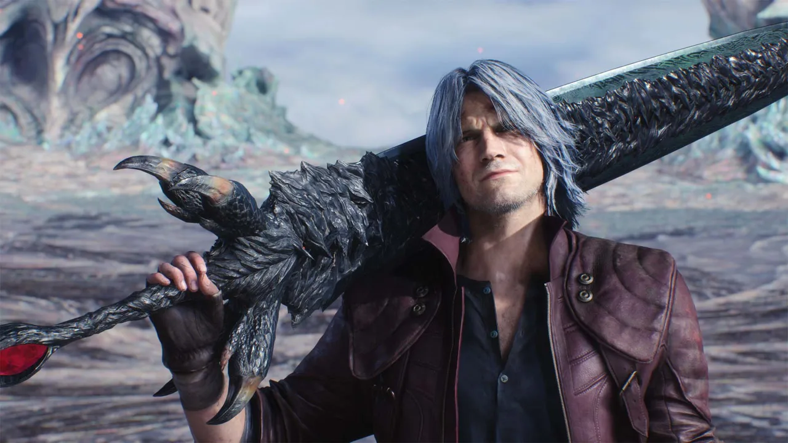

ネロ
若きデビルハンター(モーション動画あり)
Devil-May-Cry5の主人公。
移動式便利屋「デビル メイ クライ」で悪魔退治を生業とする青年。
ある事件をきっかけに“悪魔の右腕【デビルブリンガー】”を失ってしまうが、
ニコの協力を得てあらたな「兵装」を手に入れ、侵攻を始めた悪魔たちに立ち向かう。
実は今作のボスであり、ダンテの兄であるバージルの息子である。
赤ん坊の頃に黒い布に包まれて捨てられていた所を拾われため、
バージルが父親とは気づいていない。
(モーション動画あり)

ダンテ
最強の悪魔狩人
便利屋“デビルメイクライ”のオーナーで、伝説級の強さを誇るデビルハンター。
魔族でありながら人間界を救った英雄スパーダと、人間の女性エヴァの間に生まれた半魔の存在。過去に幾度もの苦闘を乗り越え、並み居る悪魔どもの侵攻を退けてきた。
いかなる窮地でも余裕の笑みを絶やさないタフガイ。ある依頼主からの仕事を受け、倒魔の地に向かう。
バージルとは双子の兄弟でる。
(モーション動画あり)
V(ブイ)
三体の魔獣を使役する謎の男
杖と詩集を携え、印象的なタトゥーを纏った痩身の男。レッドグレイブ市での騒乱が拡大する以前に、情報屋モリソンを通じてダンテの元を訪ね、ある魔物の討伐依頼を持ち込んだ。
本人に戦う力はほとんど無く、戦闘の際は付き従わせた３体の魔獣に攻撃を命じる。
使い魔たちはなぜ彼に力を貸すのか。彼が魔王討伐を目論む理由とは。
その正体は閻魔刀(ヤマト)によって自らの「人」と「魔」を切り離したバージルの「人」の部分。
(モーション動画あり)
バージル
力を求めた最強剣士
Devil-May-Cry5の主人公の父であり、ダンテの兄。
ダンテと同等の強力な力を持つが性格は真逆で力だけを信じる。
かつて母エヴァが魔帝ムンドゥス配下の悪魔に襲われて惨殺された時に、彼は母を守れなかった自らの無力さを強く悔いた。
それゆえ絶対的な力を求め、力が全てと考えるようになったバージルは人間らしい優しさや正義といった感情を捨て、悪魔として生きる道を選んだ。
それ以降父スパーダの絶大な力を追い求めて世界中を放浪したとされている。
性格は冷酷非情。むやみに人殺しはしないが殺すとなれば躊躇せず、それは血を分けたダンテすら例外ではない。
(モーション動画あり)
ニコ
武器制作の芸術家
ネロと行動を共にする自称“武器アーティスト”。
一流の武器職人【ガンスミス】ニール＝ゴールドスタインを祖母に持つ。
隻腕のネロのために「デビルブレイカー」を造る。
今作は武器屋みたいな立ち位置のためモーションなし
トリッシュ
美しきブロンドの悪魔
ダンテの母エヴァと酷似した容姿を持つ美麗な悪魔。
かつてはダンテと敵対したこともあったが、命を救われたのちに改心し、
相棒のような関係となった。
気まぐれな性格で、ダンテとも付かず離れずの微妙な関係を保っている。
知りたい方は小説やゲームをプレイしてください。
※ダンテの母親ではありません。
戦闘がないためモーションなし
レディ
高威力の重火器を操るデビルハンター
過去のとある事件でダンテと知り合い、
紆余曲折を経た現在はハンターの仕事で共闘することも。
割に合わない仕事は他人に押し付けて仲介料を取り立てるなど、
ビジネスには厳しい一面がある。
過去の事件が何か知りたい方はDevil-May-Cry3をプレイしてください。
戦闘がないためモーションなし